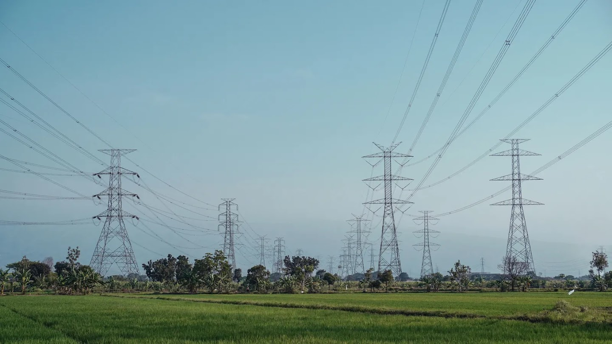
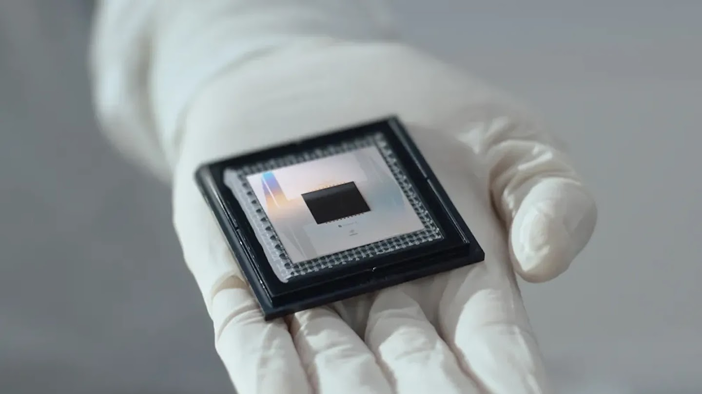

SETUP
CREATE
EVAL
DEPLOY
PUBLISH
Dynamous.ai
10% OFF
in the link ↓
ALGORITHMS RUN YOUR LIFE
Algorithms run nearly every part of your .
Power grid
DNA test
Phone chips
Drugs · Nav · Logistics
Most invented slowly. By humans. Over decades.
WHAT IT IS
Google DeepMind built one that does it .
ALPHA-EVOLVE
01
Writes code.
02
Tests its own code.
03
Keeps what works.
Like evolution — but for algorithms.
53 YEARS · MATH HERITAGE
1969
Strassen
49
2022
AlphaTensor
47
2026
AlphaEvolve
every cluster
47
MULTIPLICATIONS
First improvement in .
POWER GRID
The biggest machine humans ever built.

AC OPTIMAL POWER FLOW
14% → 14%
Feasible solutions. .
THE LIGHTS STAYING ON.
MEDICINE
AI rewriting drug discovery.
PACBIO · DNA SEQUENCING
−0%
Errors in the variant detection pipeline.

SCHRÖDINGER · DRUG MODELS
≈0×
Training and inference speedup.
New drugs reach trials sooner.
THE LOOP THAT BUILDS ITSELF
Compound interest, in silicon.
“TPU brains helping design bodies.”
— Jeff Dean · Chief Scientist · Google DeepMind
AI → CHIP → AI
HOW IT KEEPS ITS PROMISES
Every output is verified.
01
Propose code
→
02
Auto-test on real data
→
03
Keep what passes
✓
No vibes. No hallucinations. The verifier is the reason it ships.
RECEIPTS · OUTSIDE GOOGLE
Not just Google.
KLARNA
0×
Transformer training, twice as fast.
FM LOGISTIC
+0%
Routing — 15,000 km / yr saved.
WPP
+0%
Sharper ad targeting.
Six outside partners. Same story.
THE SHIFT THE HEADLINES MISSED
AI = chatbots
AI moved past chat. Into infrastructure.
It’s writing the algorithms that run your life.
THE QUESTION
If AI could redesign one part of your daily life,
what would you trust it to touch first?
Tell me in the comments ↓